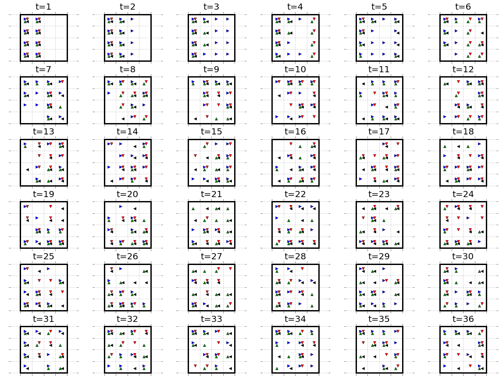
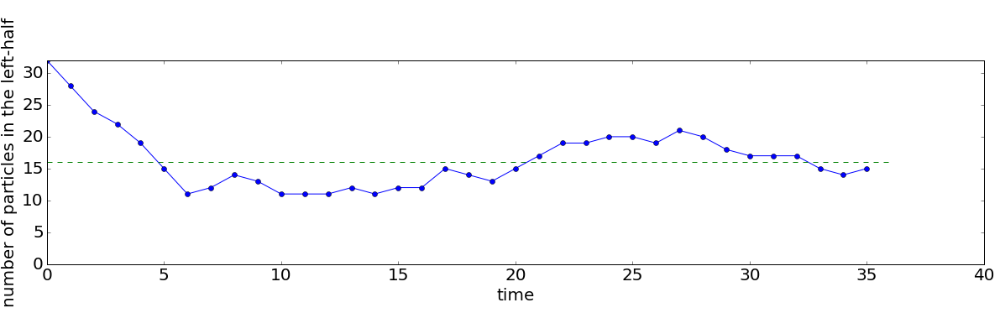
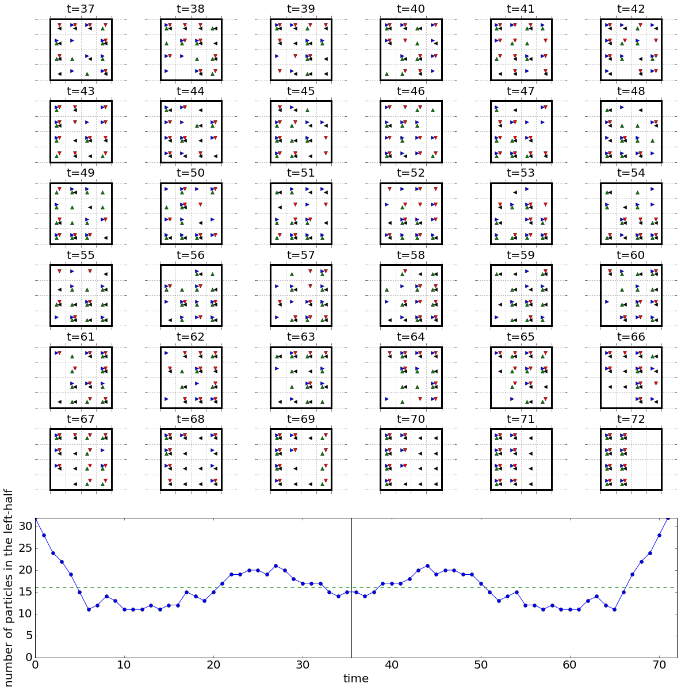
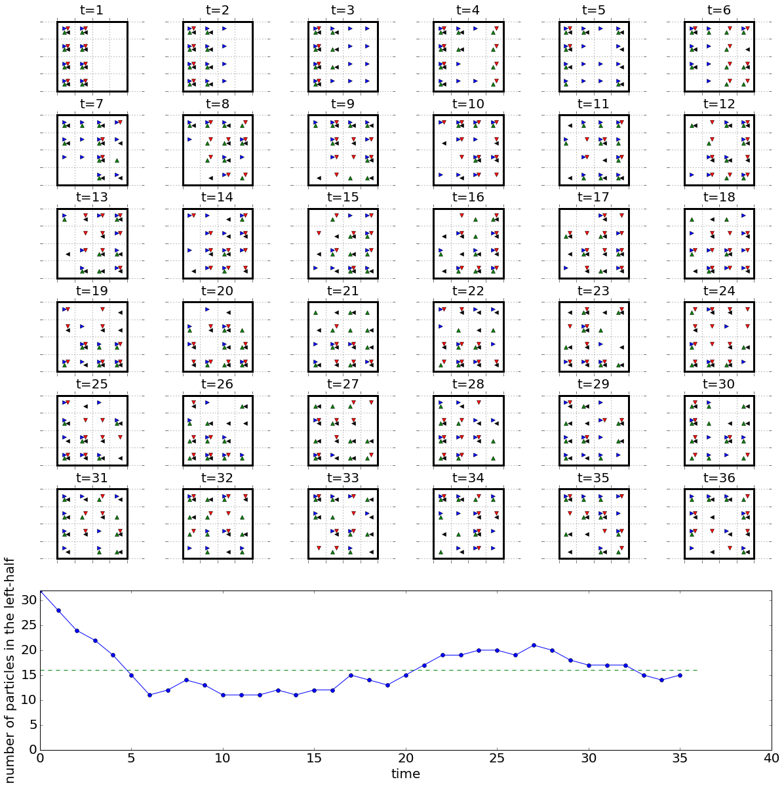
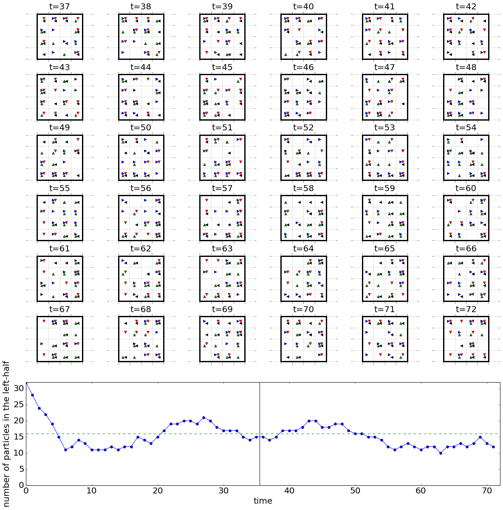

Introduction
There is a great paper Thermal noise and the emergence of the arrow of time: A simple model that illustrates the notion of the role of uncertainty in the law of increasing entropy. It starts with a very simple system of particles on a grid that can have one of 4 states - up, down, left, or right. The rules of this "universe" are entirely deterministic, and are the following:
- First, particles move in the direction they are pointing - particles pointing up move up, those pointing down move down, etc...
- If a particle hits the edge at this step then it reverses direction - a particle hitting the top reverses and will point down now, etc...
- Finally, all particles that now find themselves in a cell with two or more particles rotate 90 degrees clockwise - this represents an interaction.
That's it! If you start with a system of particles, say, all on the left half this system will evolve to a state which is pretty well mixed.

One way to measure this is to count the number of particles on the left-half of the box.

Unscrambling the egg
One thing that is interesting is that, although the system is entirely deterministic, it does lead to a well-mixed system over time - entropy increases. Another thing that is interesting is that if we were to run time backwards -- reverse all of the particles, and make the interaction rotate now counter-clockwise instead of clockwise -- we should be able to "unwind" the simulation back to its very ordered beginning. This is like reversing time in the universe and unscrambling an egg.

Why don't we see an egg unscrambling?
In the case of the real world, we never see an egg unscramble -- ever. Why? Even the slightest variation or uncertainty in the system makes the mixing not reverse. If, after the mixing, we were to randomly modify just one particle in the small, simple system described and then try to unmix it by running time backward it won't work. Even that tiniest change is enough to block us from unscrambling the egg, as shown below. First the original mixing...

and then messing up one particle (can you see which one? compare $t=36$ to $t=37$)...and then reversing time and trying to "unmix" the system.

What does it mean?
As I stated in a previous post, "The key idea with free will, as described by Sean Carroll, is that we live in a world where uncertainty dominates." It is a practical matter that even the slightest uncertainty in the simplest and smallest deterministic system leads to the system not behaving deterministically in practice. Thus, in our own much more complex universe, we should not be overly concerned that there is theoretical conflict between "I could have done otherwise" and determinism. In practice, which is where we all are, it doesn't matter.
Code
The code for these simulations can be found here.